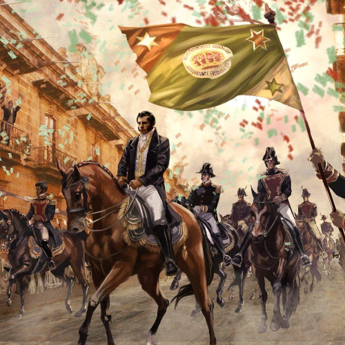
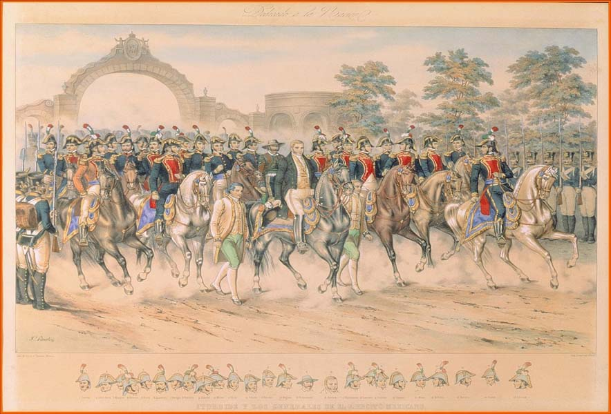
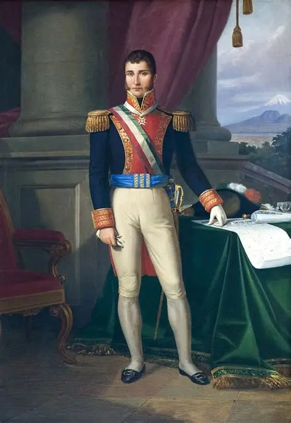
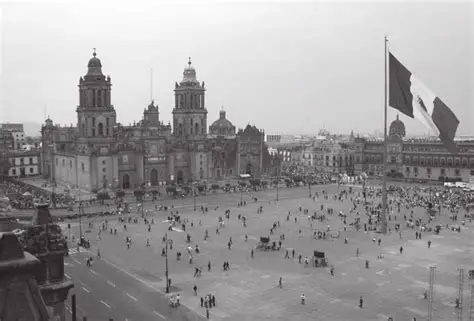
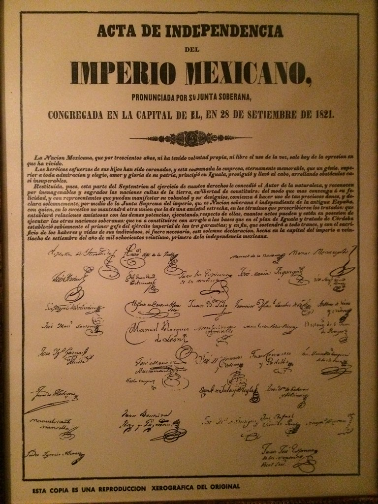

EDICIÓN EXTRAORDINARIA
¡MÉXICO ES LIBRE!
El Ejército Trigarante entra triunfalmente a la Ciudad de México

Representación de la entrada del Ejército Trigarante a la Ciudad de México.
Después de más de una década de lucha, el Ejército de las Tres Garantías ha entrado a la capital. La jornada marca la consumación de la Independencia de México.
Desliza o toca la página para continuar
LA CAPITAL RECIBE AL EJÉRCITO TRIGARANTE
CIUDAD DE MÉXICO, 27 DE SEPTIEMBRE DE 1821.
Desde las primeras horas de la mañana, las calles de la capital comenzaron a llenarse de ciudadanos que esperaban la llegada del Ejército de las Tres Garantías.
Las calles fueron adornadas con flores, banderas y distintivos con los colores blanco, verde y rojo. La población salió para presenciar un acontecimiento que marcaría el nacimiento de una nueva etapa para el país.
Al frente de las fuerzas marchaba Agustín de Iturbide, acompañado por destacados militares del movimiento independentista.

LAS TRES GARANTÍAS
ITURBIDE ENCABEZA EL DESFILE

Agustín de Iturbide al frente del Ejército de las Tres Garantías.
Agustín de Iturbide encabezó la entrada del Ejército Trigarante en la Ciudad de México. Las fuerzas avanzaron por las calles de la capital mientras los habitantes observaban y celebraban la llegada de las tropas.
El Ejército Trigarante representaba la unión de distintos grupos que habían participado en el largo conflicto. Entre sus principales figuras se encontraba Vicente Guerrero, quien había combatido durante años por la causa insurgente.
Con esta entrada triunfal se simbolizó la consumación de la Independencia y el final del dominio político español sobre la Nueva España.
UNA CIUDAD ENGALANADA

La Ciudad de México vivió una jornada extraordinaria. Las calles fueron decoradas para recibir al Ejército Trigarante y la población expresó su alegría ante los acontecimientos.
Los colores blanco, verde y rojo aparecieron en distintos adornos utilizados durante la celebración.
La entrada del ejército no solamente fue un acontecimiento militar. También representó para muchos habitantes el comienzo de una nueva nación.
Después de años de enfrentamientos, la capital presenció una entrada triunfal que quedaría registrada como uno de los momentos decisivos de la historia mexicana.
El Ejército de las Tres Garantías también fue conocido como Ejército Trigarante por defender los principios establecidos en el Plan de Iguala.
28 DE SEPTIEMBRE: NACE UNA NUEVA NACIÓN

Representación del Acta de Independencia del Imperio Mexicano.
CIUDAD DE MÉXICO, 28 DE SEPTIEMBRE DE 1821.
Un día después de la entrada del Ejército Trigarante, se instaló la Junta Provisional Gubernativa. Uno de sus principales actos fue la firma del Acta de Independencia del Imperio Mexicano.
El documento declaró formalmente que la nación mexicana era independiente de España. De esta manera, la consumación que había sido simbolizada el día anterior quedó acompañada por un documento político fundamental.
EL ACTA HA SIDO FIRMADA
México se declara oficialmente como una nación independiente, libre y soberana.
CRONOLOGÍA DE DOS DÍAS HISTÓRICOS
Entrada del Ejército Trigarante
Las tropas entran triunfalmente a la Ciudad de México.
Celebraciones en la capital
La población recibe a las tropas y se engalanan las calles.
Junta Provisional Gubernativa
Se instala la Junta que participará en la organización del nuevo gobierno.
Firma del Acta de Independencia
Se firma el documento que declara formalmente la independencia.
DOS DÍAS QUE CAMBIARON LA HISTORIA DE MÉXICO
FIN DE LA EDICIÓN
27 Y 28 DE SEPTIEMBRE DE 1821
La entrada del Ejército Trigarante y la firma del Acta de Independencia marcaron el comienzo de una nueva etapa para México.
Gracias por leer esta edición histórica.
Desliza hacia atrás para volver a las páginas anteriores.
Fuentes históricas consultadas
Secretaría de la Defensa Nacional
Archivo General de la Nación
INEHRM
Banco de México